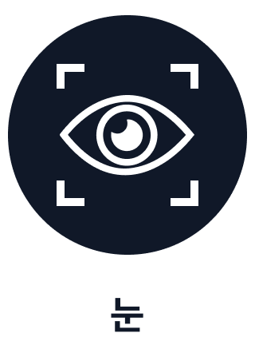

1. Diagnostic Support Medical Device
- This medical device is intended to support the clinical diagnosis by qualified healthcare professionals.
- This medical device provides objective biomarkers and insights related to visual attention and gaze patterns, and is intended for use by trained healthcare professionals in clinical and research settings.
- It is not intended to be used as a stand-alone tool to establish a definitive diagnosis of Autism Spectrum Disorder (ASD). The final diagnosis and all medical decisions must be made by trained healthcare professionals.
2. Intended Use and Intended Environment
- This device is intended for use in infants and toddlers between 16 and 36 months of age.
- This device is intended for use only in subjects without visual impairments. The presence of visual abnormalities may adversely affect the validity and reliability of the test results.
- Testing is recommended in a controlled, quiet environment free from distractions, with the infant or toddler in a comfortable state, to ensure the reliability of the results.
3. Interpretation of Results
- The results obtained from this device are based on the analysis of visual attention and gaze patterns.
- The diagnosis of ASD must be made by trained healthcare professionals, based on clinical judgment that includes developmental history, behavioral observations, and other relevant assessments.
- Test results may vary depending on the subject’s condition, environmental factors, and conditions of use.
4. Considerations
- The American Academy of Pediatrics (AAP) strongly recommends ASD screening for all children at 18 and 24 months of age, and further recommends that screening be repeated at least three times before 30 months of age. This device may be utilized as supportive diagnostic information at these recommended time points.
- This device is limited to use as a diagnostic support tool and shall not be used as a basis for determining treatment decisions or prognostic outcomes.
- Users should review this information carefully and must consult with a healthcare professional.
1. 환자 정보
| 이름 |
홍길동 |
ID |
1234-56 |
성별 |
남 |
생년월일(개월) |
2024.03.01 (15개월) |
| 평가일 |
2025년 1월 29일 |
평가도구 |
EATS v1.0 |
2. 진단 결과 요약 : 자폐스펙트럼장애(ASD) 음성자폐스펙트럼장애(ASD)양성
AOI Vacancy Count Percentage* (%)
*AVC(AOI Vacancy count percentage) 수치가 높게 나올수록 ASD일 가능성이 높다는 의미
3. 진단 내역
|
Video 1 |
Video 2 |
AOI
(관심영역) |
 |
|
|
| 측정 내용 |
- 눈맞춤
- 마음이론 (Theory of Mind)
- 사회성
- 초기 언어발달 |
- 공동주의 (Joint Attention)
- 사회적 의사소통 능력 |